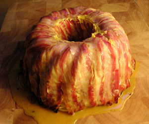

Michis Nudelhopf
4,5 von 6bucatini oder maccaroni kochen und abgiessen (leicht mit olivenöl beträufeln damit sie nich kleben). gugelhopfform mit butter leicht auskleiden und mit speckstreifen gleichmässig auslegen. bucatini in der form gleichmässig verteilen. 6 eier, ein wenig parmesan und etwas rahm zu einer masse schlagen und würzen. gleichmässig in die form geben. danach mit den überschüssigen speckstreifen die form schliessen. im ofen bei 200 grad 30 min backen. form schwungvoll stürzen.
